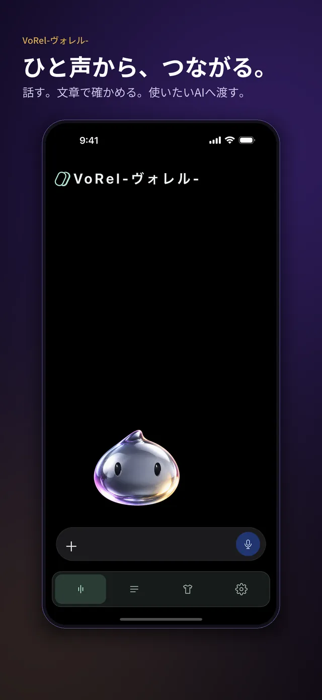
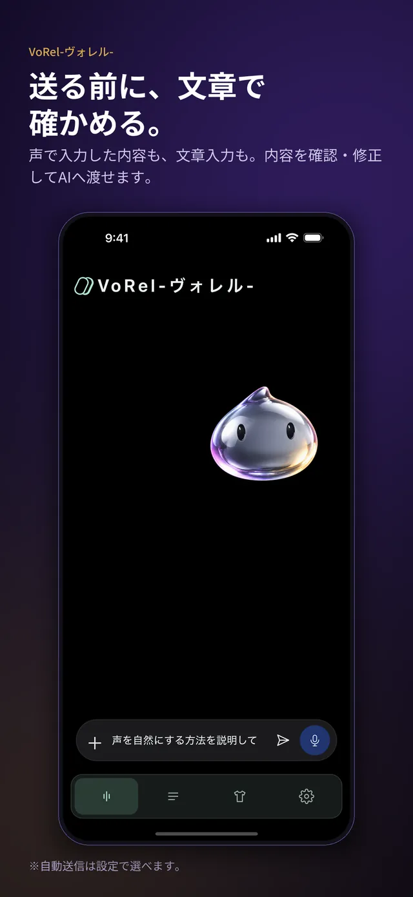
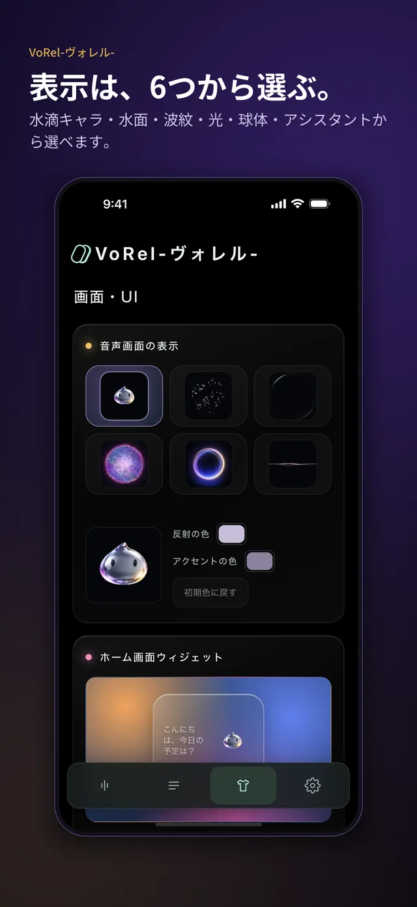
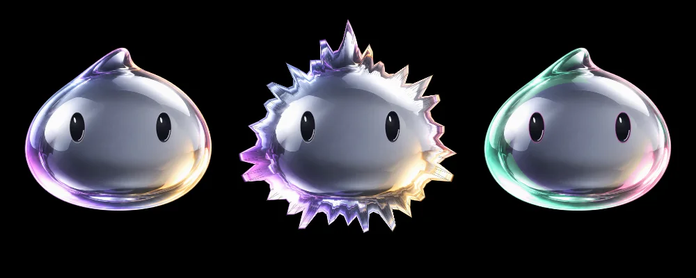

開発中の主な機能
開発中のため、公開までに内容が変わる場合があります。
送る前に文章で確かめる
声で入力した内容を文字で確認・修正してから送る流れを作っています。
使うAIを選ぶ
ChatGPT・Gemini などから使うAIを選ぶ仕組みを検討しています。利用には各サービス側の設定が必要になる予定です。
端末の中で読み上げ
返答の文章を、端末内の音声で読み上げる機能を試作しています。
表示を選べる音声画面
水滴のキャラクターや水面・光など、音声画面のデザインを選べるようにしています。
想定している使い方
-
ステップ1：話しかける
マイクを押して、やりたいことを話します。
-
ステップ2：文章で確かめる
認識された文章を確認し、必要なら直します。

-
ステップ3：画面を選ぶ
水滴のキャラクターや水面など、音声画面の見た目を好みに合わせて選べるようにしています。

実際の画面
開発中の画面です。公開までに内容やデザインが変わる場合があります。
開発中の音声入力画面。水滴のキャラクターが表示されます。 開発中の画面。声で入力した文章を確認してから送ります。 開発中の画面。音声画面の表示デザインを選びます。
水滴のキャラクター
音声画面に登場する、水をモチーフにしたキャラクターです。紹介動画は公開に合わせて用意する予定です。

配布状況
2026年11月13日時点の情報です。
- 状態
- 開発中です。公開の時期は決まっていません。
- 料金
- 公開時にご案内します。
まだ公開していません
このアプリについて問い合わせる